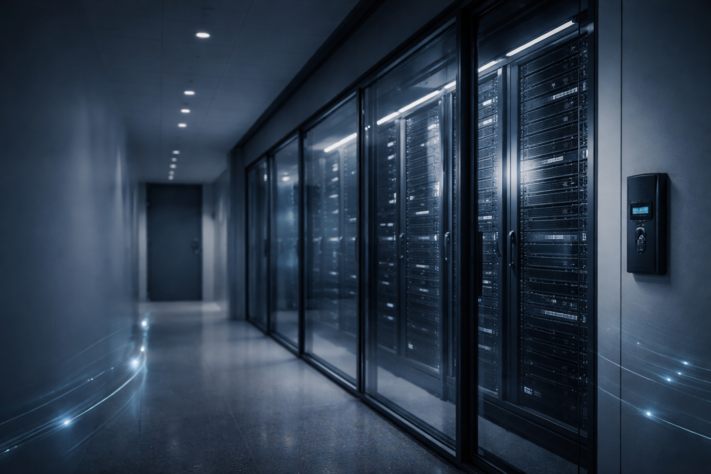

Verileriniz, ISO 27001 Bilgi Güvenliği Yönetim Sistemi
standartlarında korunmaktadır.
6698 sayılı Kişisel Verilerin Korunması Kanunu (“KVKK”) uyarınca, Kılıç Enerji Danışmanlık A.Ş. olarak, veri sorumlusu sıfatıyla, kişisel verilerinizi aşağıda açıklanan amaçlar kapsamında işlemekteyiz.
Danışmanlık süreçlerimizde (Enerji verileri, faturalar, mimari projeler vb.) elde ettiğimiz ticari ve kişisel veriler, ISO 27001 Bilgi Güvenliği standartlarına uygun sunucularda şifreli olarak saklanmaktadır. Dijital Arşivleme hizmetlerimizde verileriniz kapalı devre sistemlerde işlenir ve 3. şahıslarla paylaşılmaz.